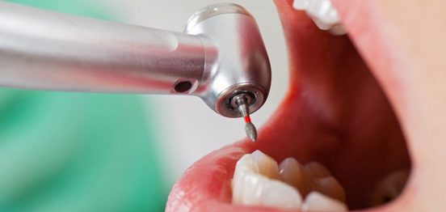
A restauração dentária é indicada para reparar dentes afetados por cáries, fraturas ou desgastes. Utilizamos materiais estéticos da cor do dente, devolvendo sua forma, função e aparência natural. O tratamento é rápido e ajuda a evitar problemas maiores no futuro.
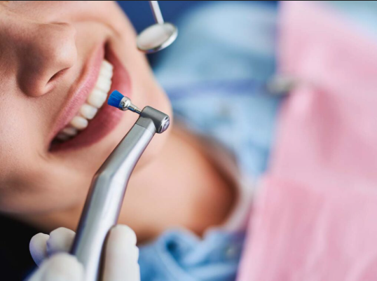
A limpeza profissional remove placa bacteriana e tártaro que não são eliminados apenas com a escovação diária. Esse procedimento ajuda a prevenir cáries, gengivite e doenças periodontais, mantendo a saúde bucal em dia.
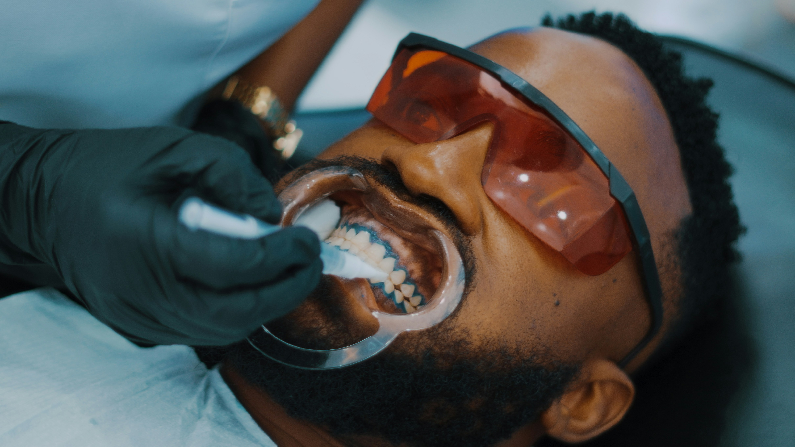
O clareamento dental é um procedimento seguro que ajuda a recuperar a cor natural dos dentes. Utilizamos técnicas modernas e supervisionadas para proporcionar resultados eficazes, sempre preservando a saúde e a estrutura dentária.

Os implantes dentários são indicados para substituir dentes ausentes de forma fixa e segura. Eles devolvem a função mastigatória, a estética e a confiança ao sorrir, proporcionando mais qualidade de vida ao paciente.
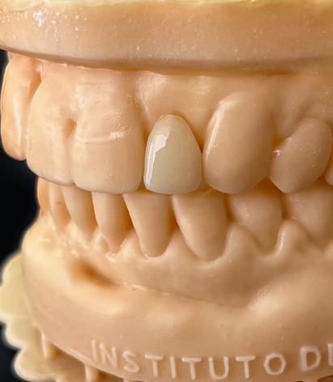
As próteses dentárias são utilizadas para recuperar dentes perdidos ou muito comprometidos. Podem ser fixas ou removíveis, sempre planejadas para devolver estética, função e conforto ao paciente.
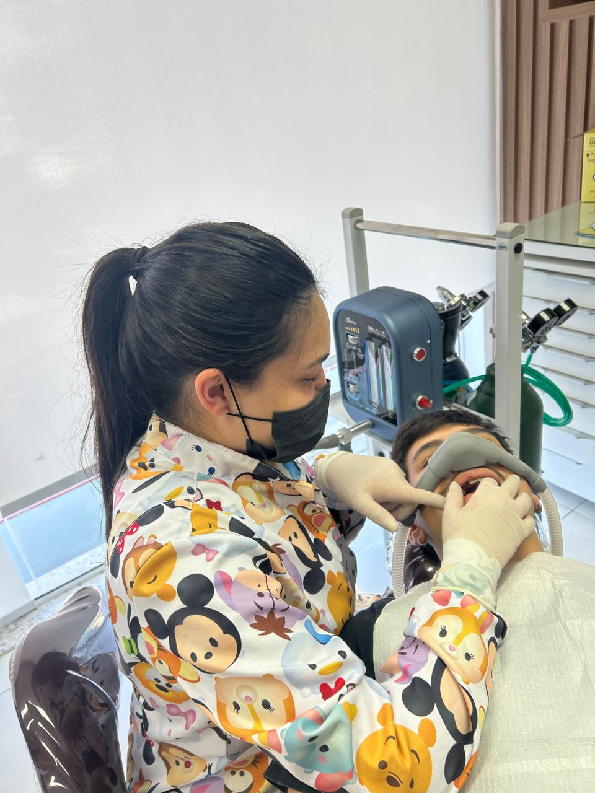
A sedação consciente com óxido nitroso ajuda pacientes ansiosos ou com medo de dentista a realizarem seus tratamentos com mais tranquilidade. É um método seguro, controlado e amplamente utilizado na odontologia.
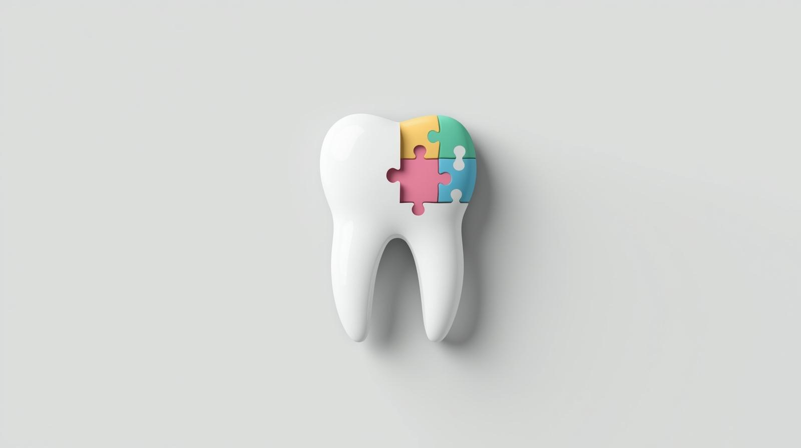
Nossa equipe está preparada para atender pacientes com necessidades especiais, oferecendo um ambiente acolhedor, respeitoso e adaptado. Cada atendimento é planejado de forma individual para garantir conforto, segurança e qualidade no tratamento.
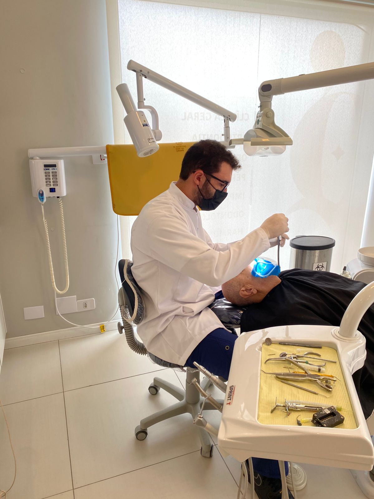
O tratamento de canal é realizado quando há inflamação ou infecção na parte interna do dente. O procedimento remove a infecção e permite preservar o dente, aliviando a dor e restabelecendo a saúde bucal.
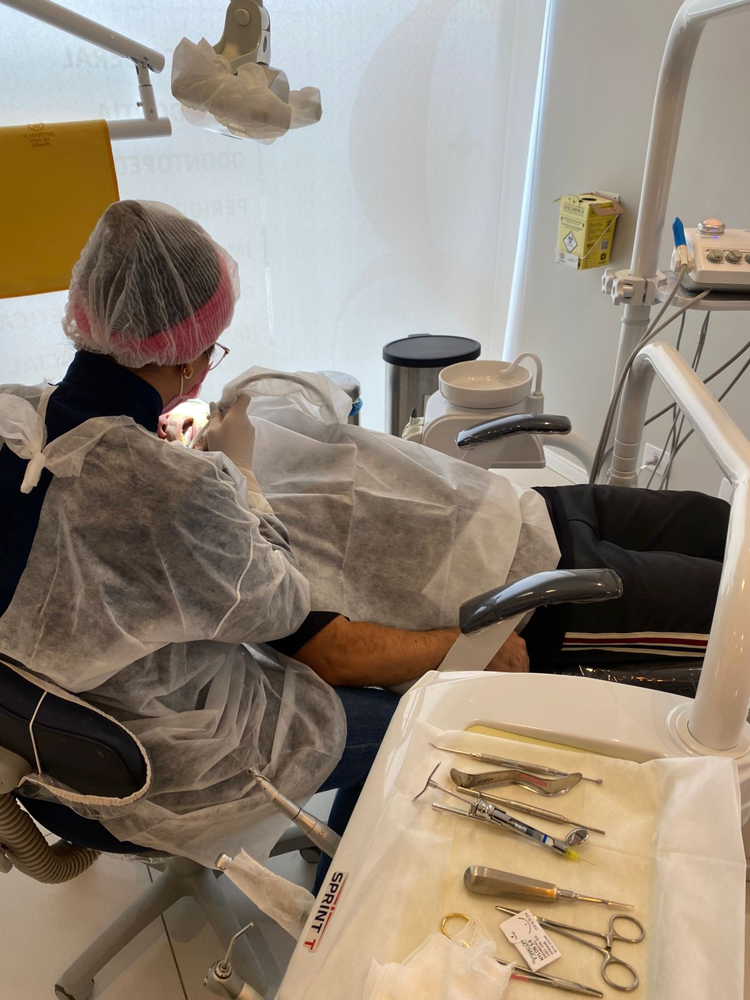
A extração dentária é indicada quando o dente não pode mais ser recuperado ou quando há necessidade para o planejamento de outros tratamentos. O procedimento é realizado com técnicas modernas e foco no conforto do paciente.
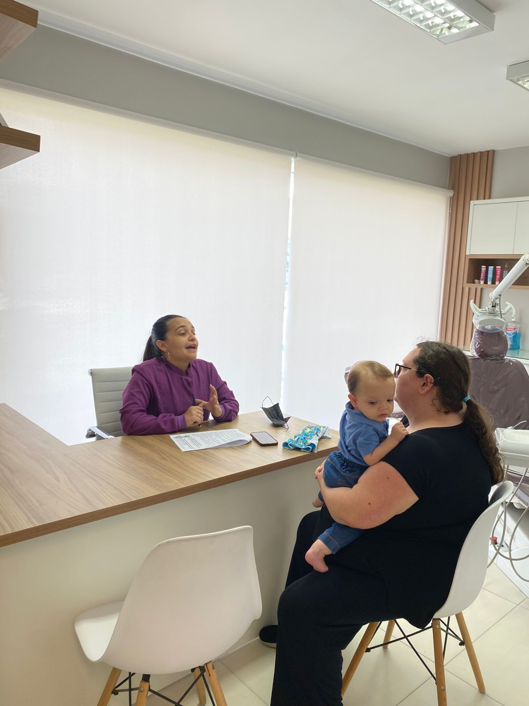
Atendemos bebês, crianças e adolescentes com uma abordagem acolhedora e humanizada. Nosso objetivo é criar experiências positivas no consultório e incentivar hábitos saudáveis desde cedo.
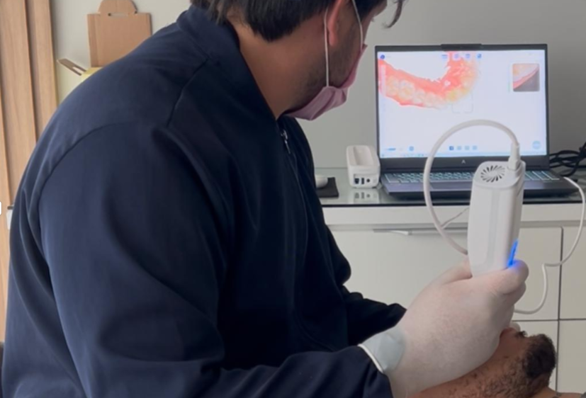
O escaneamento 3D permite visualizar a anatomia bucal com precisão, facilitando o planejamento de tratamentos e melhorando os resultados.

Esse tratamento acompanha o crescimento da criança, ajudando a corrigir problemas de mordida e posicionamento dos dentes e ossos da face. O acompanhamento precoce pode prevenir tratamentos mais complexos no futuro.
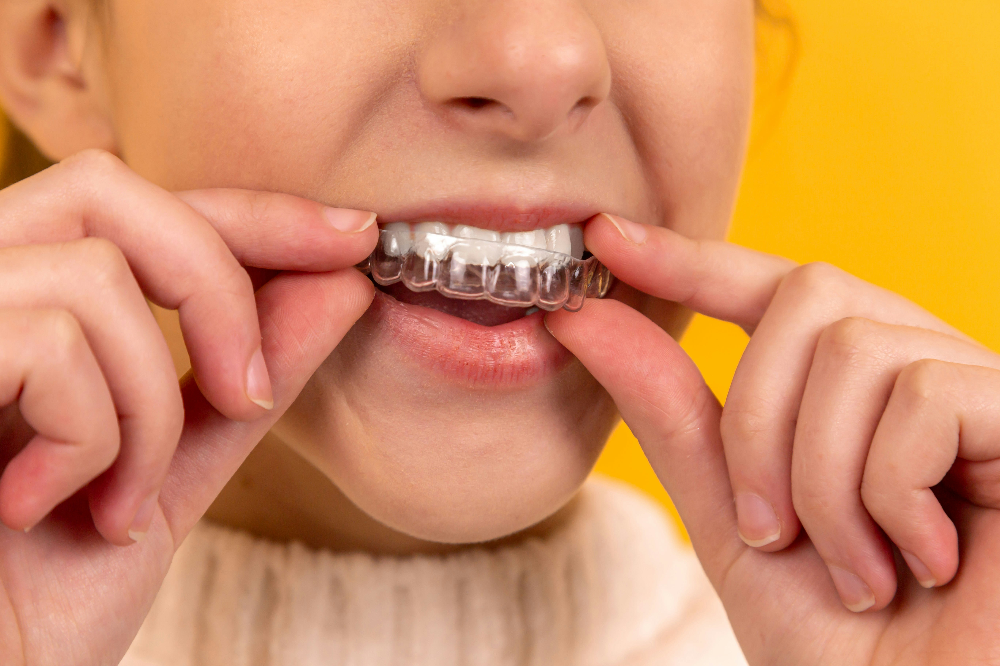
Os alinhadores invisíveis são uma alternativa moderna aos aparelhos tradicionais. São placas transparentes e removíveis que alinham os dentes de forma gradual, proporcionando mais conforto e discrição durante o tratamento.
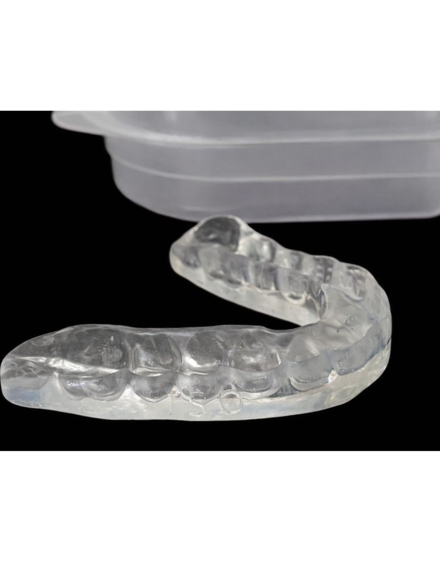
As placas miorrelaxantes são indicadas para pacientes que apertam ou rangem os dentes. Elas ajudam a proteger os dentes, reduzir dores musculares e aliviar tensões na articulação da mandíbula.

A laserterapia é utilizada como auxílio em diversos tratamentos odontológicos. O laser ajuda a reduzir dor, inflamação e acelerar a cicatrização, proporcionando mais conforto e recuperação mais rápida para o paciente.